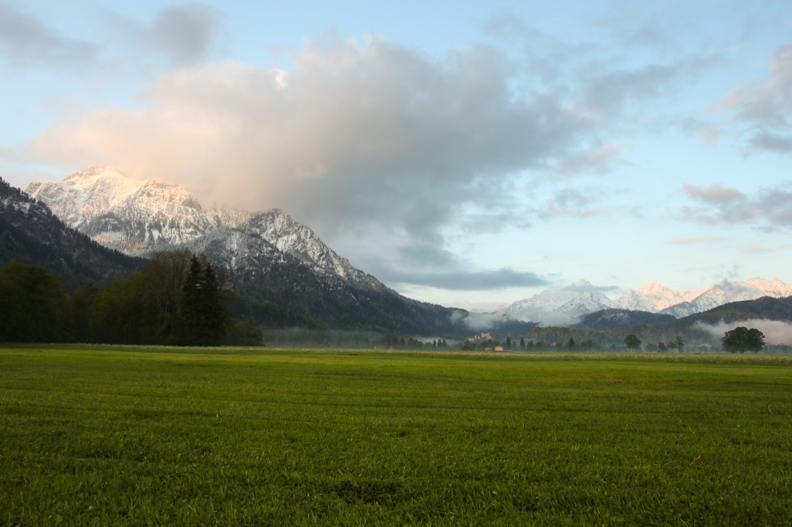

Alle vier Themen · Bali und Thailand
Das Original
Bewegung, Ernährung, Medizin und Mindset in einer Woche
- Nächster Termin
- 2. bis 9. Februar 2027 · Bali
- Dauer
- 7 Nächte, Dienstag bis Dienstag
- Gruppe
- höchstens 20 Gäste
Programm 1.390 €Zur Reise
Reisen · Medizin
Fünf Nächte im Allgäu
Für alle, die ihren Schlaf besser verstehen und abends leichter zur Ruhe kommen wollen. Die Woche vermittelt Wissen und Gewohnheiten. Sie behandelt keine Schlafstörungen.

47,50° N · 10,30° OAuf einen Blick
Termine
Der Wochenplan
7:30 Uhr Spaziergang im Morgenlicht. Abendessen schon um 18:30 Uhr. Ab 21 Uhr ist das Haus ruhig.
Zuerst Anreise bis 16 Uhr
Danach Begrüßung, frühes Abendessen, Yoga Nidra
Zuerst Vortrag: Schlafphasen und innere Uhr
Danach Gespräch: Wie schläfst du? Abends Atemübung, wenn du magst
Zuerst Wanderung im Morgenlicht
Danach Vortrag: Licht, Bewegung, Kaffee, Alkohol. Abends Yoga Nidra
Zuerst Workshop: Grübeln und Gedankenkreisen
Danach Freier Nachmittag, abends Meditation
Zuerst Deine Abendroutine, deine Liste fürs Schlafzimmer
Danach Fragestunde mit den Ärztinnen, Abschlussessen
Zuerst Abschlusskreis
Danach Abreise nach dem Mittagessen
Im Programmpreis
Nicht im Programmpreis
Du buchst dein Zimmer direkt beim Hotel. Wir haben das Haus ausgewählt, weil die Zimmer ruhig und dunkel sind.
Auch interessant
Alle vier Themen · Bali und Thailand
Bewegung, Ernährung, Medizin und Mindset in einer Woche
 39,75° N · 2,70° ONeu
39,75° N · 2,70° ONeu
Bewegung · Mallorca
Yoga und Fitness auf Mallorca
 43,20° N · 11,60° ONeu
43,20° N · 11,60° ONeu
Kochen · Toskana
Kochreise in die Toskana